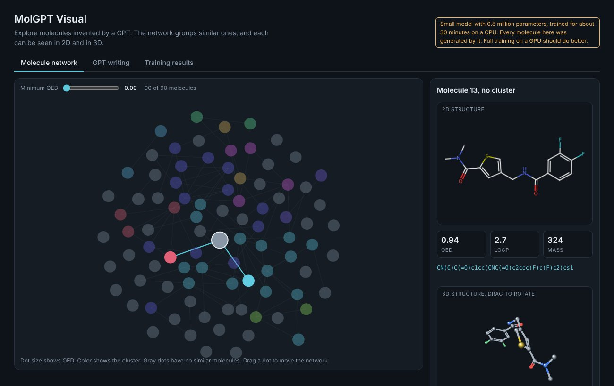
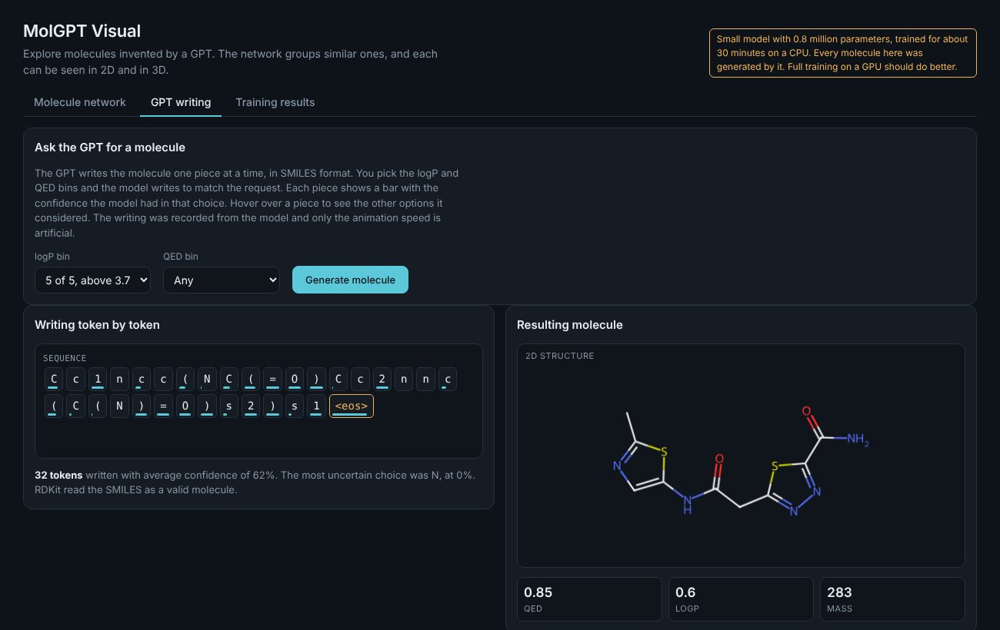
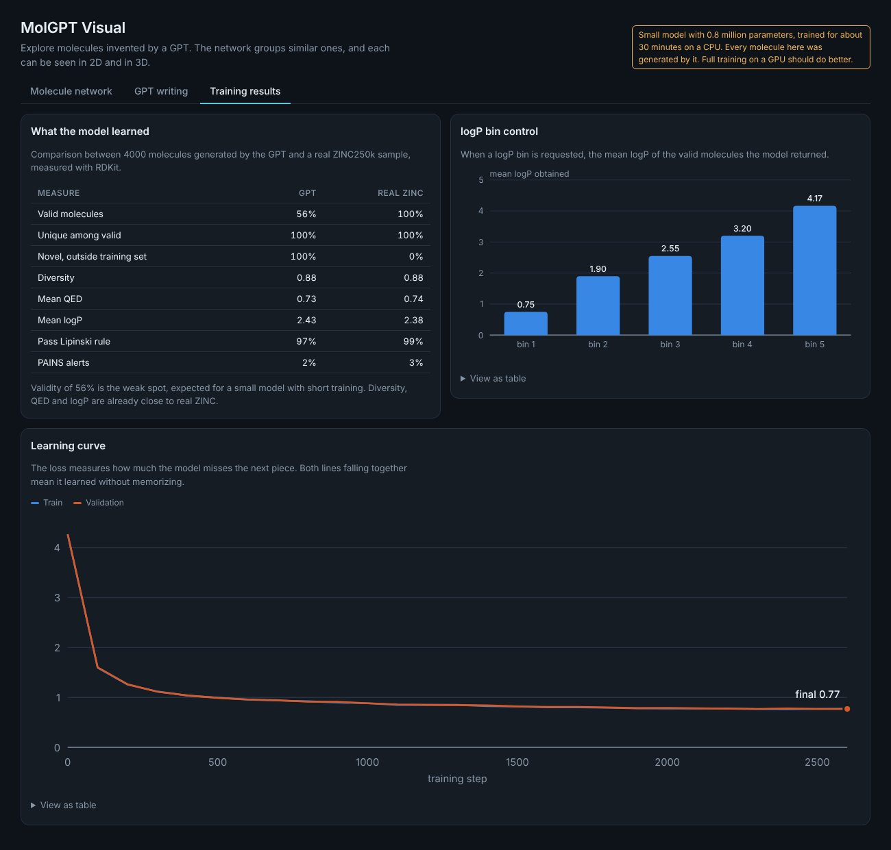

MolGPT learns from 250,000 drug like molecules and writes new ones as SMILES strings. Ask for a range of logP and QED and it writes to match. Then explore what it invented as a network of similar molecules, in 2D and in 3D.
Version 0.1, an early release. More coming.

The model writes a molecule token by token. Each piece carries a bar with the confidence the model had in that choice, and hovering shows the other options it considered. The recording comes straight from the trained model, and only the playback speed is artificial.
Try it in the interface
A model with 0.8 million parameters, trained for about 28 minutes on a CPU. Numbers come from 4000 generated molecules compared with a real ZINC250k sample, measured with RDKit.

The pipeline is short on purpose, so every step is easy to read in the code.
The small preset trains on a laptop CPU in about half an hour. The full preset is meant for a GPU, for example a free Colab T4.
pip install rdkit torch pandas numpy matplotlib python molgpt.py cpu # small model, about 28 minutes on 2 CPU cores python molgpt.py # full model, meant for a GPU
MolGPT only knows the shape of drug like molecules from ZINC250k. It knows nothing about protein targets or binding affinity, so what it writes are starting candidates and not drugs. The next step is an affinity model, trained on public benchmarks, acting as a judge for the generated molecules.